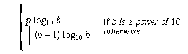

![[Option Start]](../images/opt-start.gif) The functionality described on this reference page is aligned with the ISO C standard. Any conflict between the
requirements described here and the ISO C standard is unintentional. This volume of POSIX.1-2017 defers to the ISO C
standard.
The functionality described on this reference page is aligned with the ISO C standard. Any conflict between the
requirements described here and the ISO C standard is unintentional. This volume of POSIX.1-2017 defers to the ISO C
standard. ![[Option End]](../images/opt-end.gif)
The characteristics of floating types are defined in terms of a model that describes a representation of floating-point numbers and values that provide information about an implementation's floating-point arithmetic.
The following parameters are used to define the model for each floating-point type:
- s
- Sign (±1).
- b
- Base or radix of exponent representation (an integer >1).
- e
- Exponent (an integer between a minimum emin and a maximum emax).
- p
- Precision (the number of base-b digits in the significand).
- fk
- Non-negative integers less than b (the significand digits).
A floating-point number x is defined by the following model:

In addition to normalized floating-point numbers (f1>0 if x!=0), floating types may be able to contain other kinds of floating-point numbers, such as subnormal floating-point numbers (x!=0, e= emin, f1=0) and unnormalized floating-point numbers (x!=0, e> emin, f1=0), and values that are not floating-point numbers, such as infinities and NaNs. A NaN is an encoding signifying Not-a-Number. A quiet NaN propagates through almost every arithmetic operation without raising a floating-point exception; a signaling NaN generally raises a floating-point exception when occurring as an arithmetic operand.
An implementation may give zero and non-numeric values, such as infinities and NaNs, a sign, or may leave them unsigned. Wherever such values are unsigned, any requirement in POSIX.1-2017 to retrieve the sign shall produce an unspecified sign and any requirement to set the sign shall be ignored.
The accuracy of the floating-point operations ( '+', '-', '*', '/' ) and of the functions in <math.h> and <complex.h> that return floating-point results is implementation-defined, as is the accuracy of the conversion between floating-point internal representations and string representations performed by the functions in <stdio.h>, <stdlib.h>, and <wchar.h>. The implementation may state that the accuracy is unknown.
All integer values in the <float.h> header, except FLT_ROUNDS, shall be constant expressions suitable for use in #if preprocessing directives; all floating values shall be constant expressions. All except DECIMAL_DIG, FLT_EVAL_METHOD, FLT_RADIX, and FLT_ROUNDS have separate names for all three floating-point types. The floating-point model representation is provided for all values except FLT_EVAL_METHOD and FLT_ROUNDS.
The rounding mode for floating-point addition is characterized by the implementation-defined value of FLT_ROUNDS:
- -1
- Indeterminable.
- 0
- Toward zero.
- 1
- To nearest.
- 2
- Toward positive infinity.
- 3
- Toward negative infinity.
All other values for FLT_ROUNDS characterize implementation-defined rounding behavior.
The values of operations with floating operands and values subject to the usual arithmetic conversions and of floating constants are evaluated to a format whose range and precision may be greater than required by the type. The use of evaluation formats is characterized by the implementation-defined value of FLT_EVAL_METHOD:
- -1
- Indeterminable.
- 0
- Evaluate all operations and constants just to the range and precision of the type.
- 1
- Evaluate operations and constants of type float and double to the range and precision of the double type; evaluate long double operations and constants to the range and precision of the long double type.
- 2
- Evaluate all operations and constants to the range and precision of the long double type.
All other negative values for FLT_EVAL_METHOD characterize implementation-defined behavior.
The <float.h> header shall define the following values as constant expressions with implementation-defined values that are greater or equal in magnitude (absolute value) to those shown, with the same sign.
-
Radix of exponent representation, b.
- FLT_RADIX
- 2
-
Number of base-FLT_RADIX digits in the floating-point significand, p.
- FLT_MANT_DIG
- DBL_MANT_DIG
- LDBL_MANT_DIG
-
Number of decimal digits, n, such that any floating-point number in the widest supported floating type with pmax radix b digits can be rounded to a floating-point number with n decimal digits and back again without change to the value.

- DECIMAL_DIG
- 10
-
Number of decimal digits, q, such that any floating-point number with q decimal digits can be rounded into a floating-point number with p radix b digits and back again without change to the q decimal digits.

- FLT_DIG
- 6
- DBL_DIG
- 10
- LDBL_DIG
- 10
-
Minimum negative integer such that FLT_RADIX raised to that power minus 1 is a normalized floating-point number, emin.
- FLT_MIN_EXP
- DBL_MIN_EXP
- LDBL_MIN_EXP
-
Minimum negative integer such that 10 raised to that power is in the range of normalized floating-point numbers.

- FLT_MIN_10_EXP
- -37
- DBL_MIN_10_EXP
- -37
- LDBL_MIN_10_EXP
- -37
-
Maximum integer such that FLT_RADIX raised to that power minus 1 is a representable finite floating-point number, emax.
- FLT_MAX_EXP
- DBL_MAX_EXP
- LDBL_MAX_EXP
[CX]
Additionally, FLT_MAX_EXP shall be at least as large as FLT_MANT_DIG, DBL_MAX_EXP shall be at least as large as DBL_MANT_DIG, and
LDBL_MAX_EXP shall be at least as large as LDBL_MANT_DIG; which has the effect that FLT_MAX, DBL_MAX, and LDBL_MAX are integral.
-
Maximum integer such that 10 raised to that power is in the range of representable finite floating-point numbers.
- FLT_MAX_10_EXP
- +37
- DBL_MAX_10_EXP
- +37
- LDBL_MAX_10_EXP
- +37
The <float.h> header shall define the following values as constant expressions with implementation-defined values that are greater than or equal to those shown:
-
Maximum representable finite floating-point number.
- FLT_MAX
- 1E+37
- DBL_MAX
- 1E+37
- LDBL_MAX
- 1E+37
The <float.h> header shall define the following values as constant expressions with implementation-defined (positive) values that are less than or equal to those shown:
-
The difference between 1 and the least value greater than 1 that is representable in the given floating-point type, b1-p.
- FLT_EPSILON
- 1E-5
- DBL_EPSILON
- 1E-9
- LDBL_EPSILON
- 1E-9
-
Minimum normalized positive floating-point number, bemin -1.
- FLT_MIN
- 1E-37
- DBL_MIN
- 1E-37
- LDBL_MIN
- 1E-37